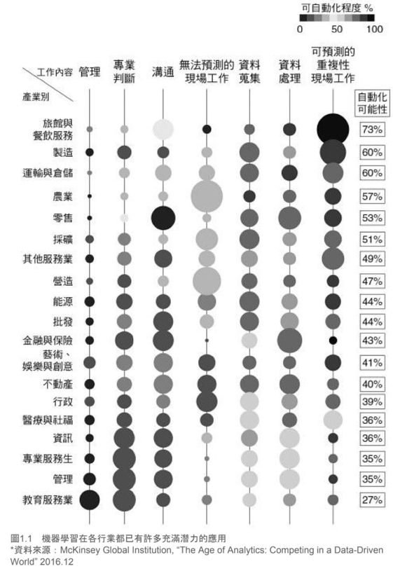
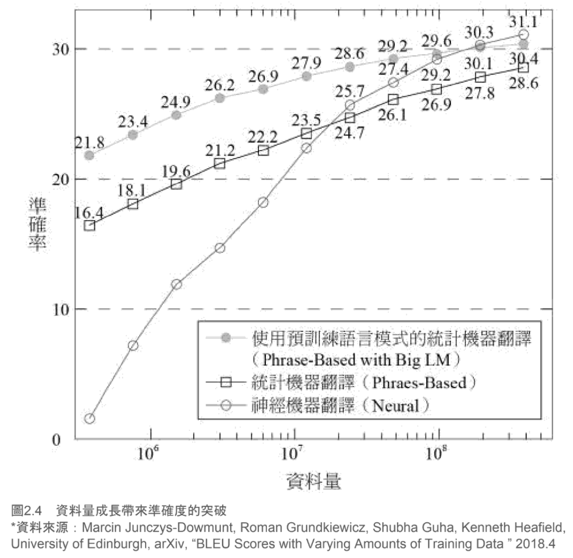

人工智慧在台灣
Table of Contents
1. 引用
1: print("TEST")
TEST
- 台灣缺乏做深度研發的環境。長期專注於製造代工，企業大部份只做D(development)不做R(research)….很多公司只讓大把的碩、博士擔任製造工程師，大多著重於產線運作，效能調校、降低成本這些漸進式研發工作，人才缺乏足以大開大闔、跳脫格局、發展潛能的舞台。1
- 人工智慧這個名詞最早出現於1956年，由人工智慧之父、知名的語言學家及電腦科學家約翰・麥卡錫(John McCarthy)提出。那一年夏天，新罕布夏州的達特茅斯學院(Dartmouth College)曾聚集一群學者，他們會面的目的就是希望集合最聰明的腦袋，找出方法，讓電腦很快能與人類一樣聰明。…他們寫信向洛克斐勒基金會爭取經費，信中提到：「我們會努力找出，如何讓電腦懂得人類語言，擁有抽象思考能力、能進行決策，並能自我改良，以解決人類的各種問題。我們認為，只要謹慎挑選一群傑出科學家共同合作，大約一個夏天的時間，至少會有一個以上的問題將會獲得重大進展。」諾貝爾經濟學奬得主赫伯特．西蒙(Herbert A. Simon)也曾在1957年做出大膽大預言，他認為電腦將能在十年內打敗人類，成為全球的西洋棋王。….電腦打敗人類西洋棋這個里程碑在四十年後(1997)才由IBM的Deep Blue達成。2
2. 發展
- 第一波人工智慧是希望電腦學會人類思考的「過程」；第二波是希望電腦能懂得人類思考的「結果」，以知識庫(knowledge base)與推理系統(inference engine)的方法來實現。
- 第三波AI的濫觴發生在2006年，電腦科學家(Geoffrey Hinton)找到突破技術瓶頸的方法，他提出限制玻爾曼機模型(Restricted Boltzmann Machine)，成功訓練多層神經網路(multi-layer neural networks)，可用來描述更複雜的非線性函數，並稱之為深度學習(Deep Learning)。
- 爆發點是在2012年10月，Hinton帶著兩名學生參加在影像識別領域最負盛名的ILSVRC比賽(ImageNet Large Scale Visual Recognition Challenge)，以深度學習配合GPU圖形處理器的運算速度，一舉拿下冠軍。3
- AI在各行業的應用: 以X光片判斷是否已患肺結核、以眼底視網膜攝影結果判斷是否有病變、以心電圖判斷是否心律不整、以腎臟超音波影像計算腎功能指數、判斷植物是否染病
機器學習在各行業的應用

Figure 1: 標題
- 這次的變革不會是泡沫人，因為它已經讓許多產業開始轉型，以新的方式來規劃、生產及提供它們的產品及服務。4
- 機器學習與前兩波AI熱潮的代表性技術，其最大的不同是：它基於資料而非人類的思考。這是它的優勢，免於遭受人類的思考及「外化機制」(Externalization)所影響或牽絆，也就是指人類情緒不自覺的投射，或自我防衛機制，會影響對資料判斷的工確性。5
3. 機器學習
- 機器學習與統計最大的差異在於其目的。統計算的目的在於基於樣本(sample)找出真相(universe)，例如全台灣2,300萬人口，能不能只選出1000人問幾個問題，就能了解台灣所有人的生活型態、就業狀況、政治傾向。機器學習想解決的是另一種問題，它的目的是讓電腦從歷史資料裡學到如何處理新的資料以解決問題。能不能從醫生的X光判讀結果學習到怎麼看新的X光片？能否從一個人的購買記錄猜到她下一次想買什麼？能否從一個人的刷卡及繳費行為預測她若借10萬會不會準時還款？機器學習與統計不同之處還在於它不在意真實資料分布，它在意的是能否根據已知預測未知。這裡所說的預測不見得是時間上的預測未來，而是任何我們在建立機器學習模型當下不知道的事實。6
- 機器學習有很多演算法，類神經網路是其中一種。拿機器學習和深度學習去比較，就好像我們不會說[iPhone比手機好用」。
- 深度學習與其他方法有個根本的差異，在於能否自動進行「特徵工程」(feature engineering)。在發展機器學習模型時，我們會基於觀測值計算出一些衍生變數(derived variables)，並加入決策修件的判斷式中，例如由身高體重衍生出BMI。在某些狀況中，由於觀測值包含許多細節，反而看不出全貌，此時就適合以衍生變數來歸納觀測現象。在機器學習中，發想及定義這些衍生變數的過程就是特徵工程。特徵工程雖然說是工程，但也有藝術的成分，因為沒有標準答案，需要懂資料、程式設計、統計、更要有領域知識、決策的「眉角」，同時還需要創意。7
- 深度學習最大的貢獻就是自動化的特徵工程，而且可以找出比人類所定義的衍生變數更好、預測力更強的特徵。
- Google在2014年第一季有超過200個專案使用深度學習，在2016年第四季有超過4000個專案使用深度學習。
- 高盛銀行到2018年底全公司有3.6萬名員工，有三成是軟體工程師。
Google Translate有三種不同的開發版本：預訓練語言模式的統計機器翻譯(Phrase-based with Big LM)、統計機器翻譯(Phrase-Based)、神經網路翻譯(Neural)，在訓練文件數量為一億篇以下時，傳統機器學習表現相對出色，但當文件數量達到十億篇時，深度學習模型的表現就開始超越傳統機器學習模型，這結果顯示資料量對於深度學習的重要性。8

Figure 2: 標題
- 學會題目的界定(problem formulation)是學會活用機器學習的開鍵第一步，而機器學習支持三種題目的界定方式：Supervised Learning(監督式學習)、Unsupervised Learning(非監督式學習)、Reinforcement Learning。9
- 監督式學習中著重於尋找觀測值與決策之間的關聯性，觀測值是模型輸入(X)、決策是模型輸出(Y)，監督式學習就是在找X與Y之間的關係。如果以數學來表示，就是在找函數F(X)=Y中的F為何。
- 非監督式學習只有X沒有Y，演算法的目的不是從歷史資料學習怎麼決策，而是自動從歷史觀測值中找出潛在的規則。非監督式學習多用於異常偵測、文件搜尋或資料視覺化，或作為監督式學習特徵工程的一部份。
- 增強式學習專門讓電腦學習與環境互動，從Try-and-Error的過程中，一步步從失敗中找到成功的路徑。最有名的計畫就是DeepMind公司開發的AlphaGo。AlpahGo的演算法是先透過監督式學習從人類棋譜歸納棋士的棋步，訓練出棋力不錯的AlphaGo早期版本；然後再進行增強式學習，由兩個AlphaGo在40天內對奕3,000萬盤棋，每盤都有輸贏，同時學習怎麼下會輸、怎麼下會贏，最後歸納出人類橫譜沒有的棋路。2017年12月DeepMind開發的AlphaZero捨棄AlphaGo先以監督式學習人類棋譜的方式，完全靠增強式學習從零開始，透過自我學習的方式去下圍棋，在三天中自行摸索出一套圍棋下法，成為有史以來棋力最強的版本。10
- Google也運用增強式學習來控制資料中心伺服器的用電模式以達到節能減碳。它的資料中心每30秒就會計算一次PUE(Power Usage Effectiveness，代表機房耗電指標)，用來衡量能源利用效率，同時也持續量測伺服器與網路設備的用電量，以及空調設備機器情況(如室外溫度)，利用這些感測器與增強式學習演算法來建立模型，由模型決定每台伺服器應該要全速運轉、低速運轉、休眠或關機，達到計算需求與節能省電之間的平衡。藉由這個做法，Google資料中心耗電量省下約四成11
- Google Brain是Google的深度學習與AI科研專案團隊，在2016年以深度學習預測眼底視網膜病變時就發現品質危機，他們將19張視網膜攝影像交給33位醫生獨立診斷，其中有個案例是33位中有一位判斷有中度病變，萬一這一案例只交給這個醫生就會造成決策值(label)有誤而誤導後續模型。Google Brain在這個計劃的做法是：為13萬個病例各請八位眼科醫師來做判讀，並投票以取得可信的資料，可以想見這帶來多少額外的資料成本。12
4. 迷思
- 1997年的Deep Blue不是使用深度學習，而是使用啟發式搜尋演算法。
機器學習最擅長解決什麼問題13

Figure 3: 標題
- 機器學習擅長的問題類型：歷史資料豐富、與情境低相關(例如，象棋、遊戲這種封閉系統，無論是論下、在哪裡下、旁邊有誰、心情如何….只要規則一樣，結局就不會差太多)。
- 與情境相關：個人商品推薦：消費者會購買特定商品有太多外部因素是電商無法觀測到的，例如，爆預算、家人是否允許、打算從另一家電商購買
- 情境相關性越高，用來表示影響決策的情境資訊就越複雜、越難觀測、也越難數據量化。
- AI最擅長：資料量大，與情境無關，如人臉辨識、車流計算、遊戲，雖然人臉辨識或車流可能因相機角度的不同情境導致辨困難，但是這種情境是人為可控的，可以要求使用者面對鏡頭、可以挑選最適合的角度安裝攝影機，所以是低情境相關
- AI其次擅長：資料量少、與情境低相關，如醫療診斷(生理訊號如X光片或心電圖本身就可以精確診斷病徵，不會受其他的因素干擾，不管是在哪裡拍的，當時穿什麼衣服、當天天氣如何…..)、排程預測、預防性維護(輕度情境相關，有時機器故障會與意料之外的事件有關係，例如濕度（太乾容易有靜電）、電壓穩定度、附近施工的聲音或振動。此外，預防性維護的問題在實務上常遇到的問題是故障資料太難蒐集。
- 雖然樣本多與情境高度相依的問題AI難以發揮，例如信用卡盗刷、個人化行銷、程式交易、自駕車、對話機器人等，這些問題都有許多無法觀測到的情境變數，可能影響決策判斷，很難僅憑觀測到的少數變數做出準確預測。信用卡發卡銀行能觀測到的資訊十分有限，僅有持卡人、刷卡時間、商店、金額、收單銀行等資訊，但是對於購買物品、持卡人是否出國等則沒有資料。個人化行銷也和情境很有關係，每個顧客購買商品的動機都不同，可能是幫自己買、幫家人、朋友買，可能是一時興趣、也可能是有固定消費習慣，不買的原因不一定是商品有問題，也許剛好是沒錢或心情不好、或是家人阻止。對話機器人也是高度情境相關，很難從表面的字句得知顧客的真正意圖。
- AI最不擅長的是樣本少又與情境高度相關的工作，例如預測戰爭、颱風路徑、大地震、新創事業是否會成功(涉及創辦人格局、新創團隊能力、產品技術實力、市場變化、競爭對手策略…)
5. 發展方向
- 人工智慧產業化可分為三種形式:
- 人工智慧晶片: 最基礎廣泛應用的技術如人流、車流計數、人臉辨識等最終將以半導體晶片的形式輸出，在經濟效益及執行成本上最有優勢。
- 人工智慧雲端平台: 更複雜的技術如語音辨識、語言理解及多數的特定產業需求則以雲平台的方法提供，而金融業則可能會有私有雲
- 人工智慧顧問服務: 需要高度客製化的情境及問題則要以顧問或軟體客製化的形式輸出。
- 人工智慧晶片: 最基礎廣泛應用的技術如人流、車流計數、人臉辨識等最終將以半導體晶片的形式輸出，在經濟效益及執行成本上最有優勢。
- McKinsey & Company在「人工智手十尸一人-下一波數位浪潮？報告中指出AI在各個產業的應用會分成四個面向(4P)：
- 規劃(Project): 更精確
- 生產(Produce): 更高效率
- 行銷(Promote): 對的時間給對的人
- 供給(Provide): 提供客戶滿意度
- 規劃(Project): 更精確
- 零售業4P:
- 規劃(Project): 預測市場對特定產品的需求、自動化與供應商的價格協商
- 生產(Produce): 智慧倉儲管理、商品管理、店面動線最佳化
- 行銷(Promote): 訂價最佳化、個人化行銷
- 供給(Provide): 個人化購物提醒、AI語音客服
- 規劃(Project): 預測市場對特定產品的需求、自動化與供應商的價格協商
- 健康醫療產業4P:
- 規劃(Project): 輔助預測國民健康與特定疾病傳染狀況、規劃預防性措施、減少發病及就診率
- 生產(Produce): 搭配各式的感測器全面監測高風險族群在醫院或居家的健康，進行適時處理
- 行銷(Promote): 進行個人化行銷，提升健康意識、輔助健康飲食管理
- 供給(Provide): 以手機或隨身感測器進行個人居家身體檢查
- 規劃(Project): 輔助預測國民健康與特定疾病傳染狀況、規劃預防性措施、減少發病及就診率
6. 經驗
6.1. 製造業
- 瑕疪檢測
- 某紡織廠在織完一卷布後就由生產線同仁以肉眼檢查是否織的平整、織線有無扭曲變形，並以人工操作，將不完美之處裁掉。
- 在料染色後，再由另一批同仁以肉眼檢測是否染整均勻。
- 然然人工瑕疪檢測配有自動光學檢測(Automatic Optical Inspection, AOI)設備進行，但是仍屬於第二波AI技術，靠的是人類的規則
- 導入深度學習後，不僅準確率更高，檢測速度更快。人員目測的瑕疪漏網路為5%，AI為0.01%；人員每天目測30萬張，一台十萬左右的電腦每日可測1,440萬張，效率提升40倍。
- 某紡織廠在織完一卷布後就由生產線同仁以肉眼檢查是否織的平整、織線有無扭曲變形，並以人工操作，將不完美之處裁掉。
- 自動流程控制
- 製造業的共通挑戰是設備參數的調控及最佳化，或稱為自動流程控制。
- 在生產過程中，產品品質、良率及生產速度會受到許多參數影響：馬達轉速、輪軸速度、電流、電壓、環境變數（風速、濕度、溫度），需要調空的參數可能多達上千。
- 目前均仰賴第一線工程師經驗以不斷試誤來調整參數
- 製程參數若未精準調好，會造成生產效率的低落及良率的降低，而且調整參數後可能要再等四、五個小時才會知道結果是否符合預期目標。
- 以機器學習來學習設備參數、環境、生產條件、目楆之間的關聯性，當設備、環境、生產條件或目標其中一項改變時，就可以透過模型找出最佳參數，大幅縮短因試誤而浪費的時間及生產成本。
- 在化工製程中，透過機器學習來模擬參數的調校，可以在對的時間提示製程工程師調整參數，最高可以將良率由原先的六成提升到98%，改善褔度超過五成。
- 這個流程跟學校很像，參數就是師資、課程，學生是原料；但是學校會更複雜，因為學校不是製造業，是服務業，所以要用另一個角度來看待，也就是，提供不同的客製化服務，讓學生能更樂意、更有效率從學校借走更多知識
- 製造業的共通挑戰是設備參數的調控及最佳化，或稱為自動流程控制。
- 預測性維護
- 生產設備隨時有可能會故障，有些設備的失敗成本很高，若在運轉狀態中損壞，將導致線上所有原料及半成品的消耗，造成良率降低。
- 預測性維護牽涉到訊號處理，例如要預測馬達是否將要故障，可以透過馬達的電壓、轉速、震動及聲𨑨來判別；要預測機械手臂是否已有故障徵兆，除了上述訊號，還可以參考手臂的行程順暢度、夾具的穩定度、夾角的精確度
- 在某空氣壓縮機廠的合作中，藉由蒐集資料及建立深度學習模型，可以準確預測一小時後的空氣壓縮機溫度，可以在壓縮機過熱前，提早預知並爭取一個小時的緩衝時間，減少其工作量，防止過熱跳機而影響產線運作。
- 生產設備隨時有可能會故障，有些設備的失敗成本很高，若在運轉狀態中損壞，將導致線上所有原料及半成品的消耗，造成良率降低。
- 原料組合最佳化
- 一張印刷電路板上有數百電子元件，每個元件有不同供應商、等級、價格，如何挑選才能在成本與價值(良率、穩定性)間找到平衡？
- 以染整業為例，客戶要在特定布料上染出指定顏色並指定固色性及演色性，目前的作法是先以打色模擬軟體計算第一次染料配方，由老師傅實驗、再反覆修正配方、實驗。平圴要經歷三到七天的打色嚐試。
- 以深度學習建立模型來描述布料、目標顏色及染料濃度間的關係，可以將第一次打色的成功率由原本的七成(軟體模擬加師傅經驗調整)提升到九成五
- 一張印刷電路板上有數百電子元件，每個元件有不同供應商、等級、價格，如何挑選才能在成本與價值(良率、穩定性)間找到平衡？
7. 機器學習
- 目前機器學習及深度學習的應用門檻逐日降低，只要學會寫程式，經過幾個月的訓練都可以上手。但是在許多情境中，現成的程式庫可能無法直接解決，就必須採用較進階的演算法，甚至是最新的研究成果。
- 機器學習就和許多技能一樣，門檻低，但是要精通絕非易事。
不同產業投資人工智慧的效益

Figure 4: 標題
- 資料分析可以分四個層之：
- 描述: 「發生了什麼?」，分析評估現況、了解問題
- 解釋: 「為什麼會發生?」，分析提供問題的初步診斷
- 預測: 「未來是否會發生?」，提供改善和解決問題的工具
- 最佳化: 「如何讓它發生?」,提供改善和解決問題的工具
- 描述: 「發生了什麼?」，分析評估現況、了解問題
不同資料分析的階段與價值

Figure 5: 標題
- 圖表示決策可能會誤導
- 大家習以為常的圖表示決策其實有很大缺陷；因視覺呈現的限制，再複雜的資料也只能以二維、三維的形式片面呈現資料。
- 零售業關心的產品銷量可能與店點、擺設位置、售價、折扣活動…等八個因素有關，但圖表每次只能呈現銷量與一個或兩個變數的關係，無法同時呈銷量與八個變數的關係。
- 台灣多數企業目前仍停留在前兩個階段，甚至是第一階段，也就是拿著數據產出報表，以人來解讀並據以進行決策，誤以為只有人類才可以理解瞬息萬變的市場。
- 大家習以為常的圖表示決策其實有很大缺陷；因視覺呈現的限制，再複雜的資料也只能以二維、三維的形式片面呈現資料。
- 電話客服的指派往往是隨機，更好的做法是根據來電者的性別、年紀、性格、擁有商品及最近交易，預測該通電話的來意，以演算法指派合適的客服專員。來電者的資料可以透過機器學習技術分析對話內容、推論人格特質。
- 目前全球集中交易的股權巾場有超過九成為程式交易。
8. 挑戰與建議
- 我們常高估一年內能做的事，低估十年可能發生的改變
8.1. 企業導入AI最常面臨的挑戰
- 挑戰一：人才缺乏
根據英國經濟研究機構牛津經濟公司的「人才大未來報告」(Global Talent 2021 Report)，調查42個國家的人資長對於人才供給與需求狀況的主觀評估。台灣人才短缺嚴重程度是第一名。

Figure 6: 標題
- 挑戰二: 資料基礎建設不足
如何評估企業的資料基礎建設是否已完成？品質是否夠好？
- 進行資料蒐集、儲存、管理及處理的資料基礎建設建好了嗎？
- 資料管理有統一的授權模式嗎？或是要由資料使用者逐一去說服企業分散各處的資料擁有者?
- 資料的蒐集與產出有融入企業流程中嗎？還是每次得為了特定的專案再投入額外的人力時間資源來整理蒐集？
- 資料應用的導入已是常規任務，還是得另外花力氣去說服相關業務單位？
- 分析資枓的團隊是管理資料的團䧧兼任？還是有個專業的資料分析團隊進行？
- 資料分析團隊熟悉機器學習？還是仍然用繪圖製表在做基礎層次的資料視覺化?
- 進行資料蒐集、儲存、管理及處理的資料基礎建設建好了嗎？
- 挑戰三: 不容易找對問題
- 工程師的視角只關注在技術，缺乏對企業全貌的了解。若只有工程師懂AI，很容易找到「能用AI解決的問題」，但是不是以價值來找問題，而是以技術可行性來找問題。
- 為什麼找對問題會如此重要？因為目前AI系統都是基於機器學習技術來開發，一旦開發出來，只能解決特定的問㑯。同樣是機器學習模型，要解決什麼問題，能解決什麼問題，能解決到什麼程度？能產生多少價值？這些都要在一開始定義清楚。
- 如何找對問題？高階主管必須親自投入學習 AI,了解其應用與限制。
- 工程師的視角只關注在技術，缺乏對企業全貌的了解。若只有工程師懂AI，很容易找到「能用AI解決的問題」，但是不是以價值來找問題，而是以技術可行性來找問題。
- 挑戰四：產學之間的鴻溝
9. 如何打造AI團隊
- 企業管理中最貴的一句話：我們從前不是這樣做的。
核心成員
9.1. 資料科學家
擅長連結資料與商業價值，能定義問題與目標，能處理分析資料，讓資料為企業產生商業價值。要在資訊、統計、業務領域三個方面都有一定造詣。不一定要資訊背景出身，只要對產業有一定的商業知識及敏感度，要常和業務前線的人在一起，不只是一起開會，最好一起社交，藉此了解企業與客戶的互動，了解客戶的痛點與需求，回頭面對資料時，更能找出隱藏在其中的商機
9.2. 資料工程師
擅長蒐集、處理資料
9.3. 機器學習工程師
擅長演算法
10. AI 的五大迷思
10.1. 迷思一：資料等於價值
資料若沒有經過妥善的加工處理和萃取分析，本身並無太大價值，需要將對的資料用在對的場景。例如，電信公司的通聯記錄，行銷公司只會拿來做行銷，治安機關則可以拿來追查詐騙集團；又如 X 光片的判斷品質決定了 AI model 的成效。資料等於價值的另一反例為 AlphaZero。AlphaZero的價值在於其增強式學習演算法，而非資料。
10.2. 迷思二：牽涉電腦與資料就是 MIS 部門的工作
AI 的導入需要跨部門支持，其開發團隊需要資料科學家(數學、統計)、領域專家(領域知識)、資訊人員(程式設計、資料庫)，最後在驗證模型成效時更需要跨部門的支持。
10.3. 迷思三：資料分析就是產出報表
資料分析不應只限於公司內部資料庫中的結構化資料，而應包含非結構化資料(影像、聲音、影片、文字、互動)。很多公司的資料分析團隊就是出報表讓主管來解讀，這是十分浪費的，而且，圖表能呈現的資料有限（二維到三維），無法處理多維度的變量關係，應該提供的是協助決策的建議。
10.4. 迷思四：電腦決策不可能贏過人的專業經驗
人類其實在處理和接收訊息的數量上相當有限，而且只能注意到「強訊號」，對於許多連結性看似較低、但卻可能隱藏資訊的「弱訊號」並無法掌握。但乍看之下不明顯的弱訊號在累積加總後，其訊息強度可能更勝於容易辨識的強訊號。主要原因在人類的短期記憶有限、能留意到的弱訊號太少，此外，有些工作需要極快的反應時間(如股市交易)。1995 年 Amazon 曾讓 50 位資深編輯就「推薦書單v」與演算法進行 PK，自此後 Amazon 所有商品推薦都由機器學習進行。
10.5. 迷思五：導入系統或平台就可以解決營運問題
AI 不是一個資訊系統(如 ERP)，而是一種根據已知預測未知的方法，它沒有標準做法，其應用情境與方式會隨著企業的狀況與及需求有所不同。因此，問題不在「有沒有導入 AI」，而是「AI 應用的深度與廣度」。
11. 工作
- 無論在哪種崗位，若要為未來做好準備，一定要有能力分析AI對自己的工作帶來什麼影響
- 阿里巴巴集團旗下的廣告交易平台「阿里媽女尸火手」在2018年6月推出「人工智慧智能文案」系統，從淘寶、天貓的上億條標題文案中篩選出數百萬條，再經過自然語言處理，可以自動快速生成文案。無論是只需要幾個字的短標題，還是60個字左右的商品描 述，都能自動生成，系統可以在1秒內2萬個短標題。
- 阿里巴巴的鹿班系統每秒可以產製8000張商品横幅廣告(banner)，於2016年首次為雙11活動服務，製作了1.7億張商品廣告，點擊率提㐼了100%，2017年的產量提升到4億張，每20分鐘做一張、一天工作八小時也只能個24張，4億張相當於1萬名設計師持續工作五年。
- 美國Stitch Fix的營運模式為：加入會員時先繳20美元，就能定期收到裝著五件衣服的包裹，這是Stitch Fix依用戶身材及偏好做的個人化推薦成果。用戶可以留下部份，退回其他，若全部退回則要支付20美元運費。Stitch Fix的5800位員工中有3000位造型師與75位資料科學家，五年內打造出20億美元的市值，在美國目前有200萬活躍用戶。Stitch會根據會員在註冊時填寫的詳細問卷以及每次留下與退回的品項記錄，精確量化每個用戶的穿著品味、偏好與身材，藉由機器學習不斷優化寄送的衣服樣式與尺寸。
- 了解AI的能與不能非常重要，它能做的，不要競爭，同時加強自己的電腦技能，學習善用它，讓它變成你的軍師與手腳。
12. 經理人須具備的十個認知
- 沒有資料就不會有AI
- 不是有資料就一定能產出 AI
- 你從來沒答案的事，AI也不會答
- 實驗文化與AI同樣重要
- 不要忽略資料的成本
- 統計圖表與機器學習是互補而非互斥關係
- AI的導入必然造成企業流程的改變
- 主管要有能力評估與分析優劣成敗
- 別把AI的導入丟給資訊部門
- AI須長期觀察、不斷翻新